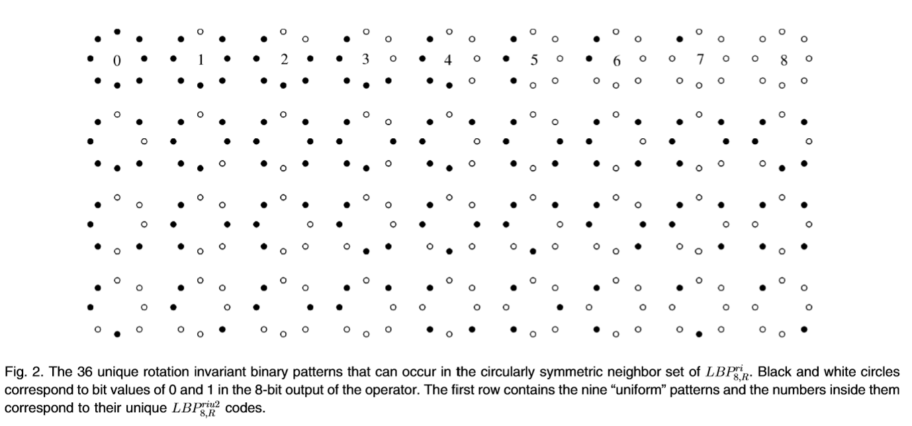

Predictive Modelling (SAS)
Introduction
The aim of the current study is to investigate whether MRI image features extracted from baseline kidney images can enhance the prediction of disease progression in young Autosomal Dominant Polycystic Kidney Disease (ADPKD) patients. This study is important because recent literature has demonstrated the inclusion of MRI image features improves the prognostic accuracy of models in adults, but this has not yet been demonstrated in children. Improving prediction models could greatly assist in diagnosing and predicting kidney disease outcomes in children, which is more challenging than in adults and could lead to improved treatment.

Task One

Task Two

Clinical Hypotheses
The two clinical hypotheses for this study are that including MRI image features will improve model performance compared to using baseline kidney volume alone in models predicting
Percentage change of total kidney volume growth
Classification of a patient as having fast or slow progression of the disease.
Background
Here we will review background information on the methodology and variables provided in this data set.
Gabor Transform
What is it
The Gabor Transform, named after Dennis Gabor, is a powerful technique for analyzing the texture of MRI images. By convolving the image with a Gabor filter, it becomes possible to discriminate between features based on intensity differences. This allows the target region and background to be differentiated if they possess distinct features, as they will exhibit different intensity levels. Moreover, the Gabor Transform has tunable parameters, such as the frequency of the sinusoidal wave, which can be adjusted to extract specific textures from the images. Higher frequencies are ideal for capturing fine textures, while lower frequencies are better suited for coarse textures.
How it Works
The Gabor Filter first applies a Gaussian Envelope to focus on a small region of the image. It then applies a sinusoidal wave that oscillates at a specific frequency and captures the variation in intensities at that frequency and orientation within that region.
Example of Gabor Transform

Image Features Provided by the Gabor Transform
In general, Gabor functions can easily extract features of:
Spatial Frequency (e.g. how often pixel intensity changes in a given area)
Density (e.g. concentration of features within a certain area)
Orientation (e.g. Textures or edges at 0°, 45°, 90°, 135°)
Phase (e.g. alignment/distance of features)
Energy (e.g. overall intensity)
Gray Level Co-Occurrence Matrix
What is it
The Gray Level Co-Occurrence Matrix (GLCM) is another powerful tool for extracting texture features from an MRI image. GLCM works under the assumption that the textural information in an image is contained in the “average” spatial relationship that the gray tones in the image have to each other. For example, when a small patch of the picture has little variation of features, the dominant property is tone; When a small patch of a picture has high variation, the dominant property is texture (3).
How it Works
GLCM examines the spatial relationship between pairs of pixels in an image and calculates how often pairs of pixel values occur at a specified distance and orientation. It does this by computing a set of gray-tone spacial-dependence matrices for various angular relationships and distances between neighboring resolution cell pairs on the image (3).
Example of GLCM

Image Features Provided by GLCM
In general, GLCM provides information on the following features:
Homogeneity
Linear Structure
Contrast
Number and Nature of Boundaries
Complexity of the Image
Local Binary Pattern
What is it
The Local Binary Pattern (LBP) is a third powerful method for extracting texture features from an image. An important and fundamental property of texture is how uniform the patterns are, and LBP captures this by detecting these uniform patterns in circular neighborhoods at any rotation and spatial resolution. LBP is rotation invariant, meaning it does not matter what rotation the image is at; it will always extract very similar features) (4).
How it Works
LBP works by comparing the intensity of a central pixel with its neighboring pixels and encoding this relationship into a binary pattern. For each neighbor, if it’s intensity is greater or equal to the central pixel, it gets assigned a 1 (otherwise a 0). The binary values of all neighbors are then concatenated to form a binary number, and this number is converted into a decimal that represent the LBP for the central pixel (4).
Example of LBP

Code Information

Image Features Provided by the LBP
In general, the LBP provides image features on:
Uniformity
Local Contrast
Texture Description
Spatial Patterns
Gray Level Distribution
Method
Study Design
The investigators recruited 71 young patients with ADPKD and collected MRI data at baseline and after 3 years. Additionally, the height corrected kidney volume for each patient was collected at baseline and 3 years by a physician, and the percentage change calculated. Patients were classified as having slow or fast progression of the disease based on this percentage change. Image features were extracted from the baseline MRI images including 2 image features on kidney geometric information, 5 features based on Gabor transform, 2 features based on gray level co-occurrence matrix, 5 features based on image textures, and 5 features based on local binary pattern.
Statistical Hypotheses
A linear regression model predicting percentage change of total kidney volume growth including MRI image features and baseline kidney volume will have better performance than a model with baseline kidney volume alone, as determined by specificity, sensitivity, PPV, NPV, accuracy, and AUC.
A logistic regression model predicting classification of disease progression as slow or fast including MRI image features and baseline kidney volume will have better performance than a model with baseline kidney volume alone, as determined by specificity, sensitivity, PPV, NPV, accuracy, and AUC.